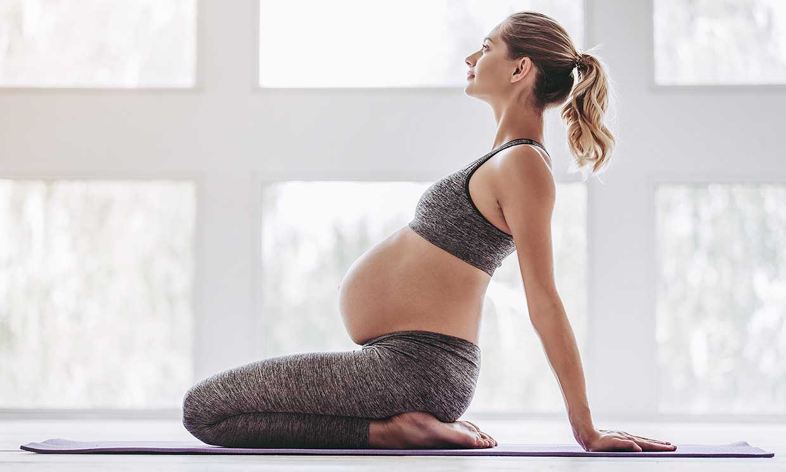
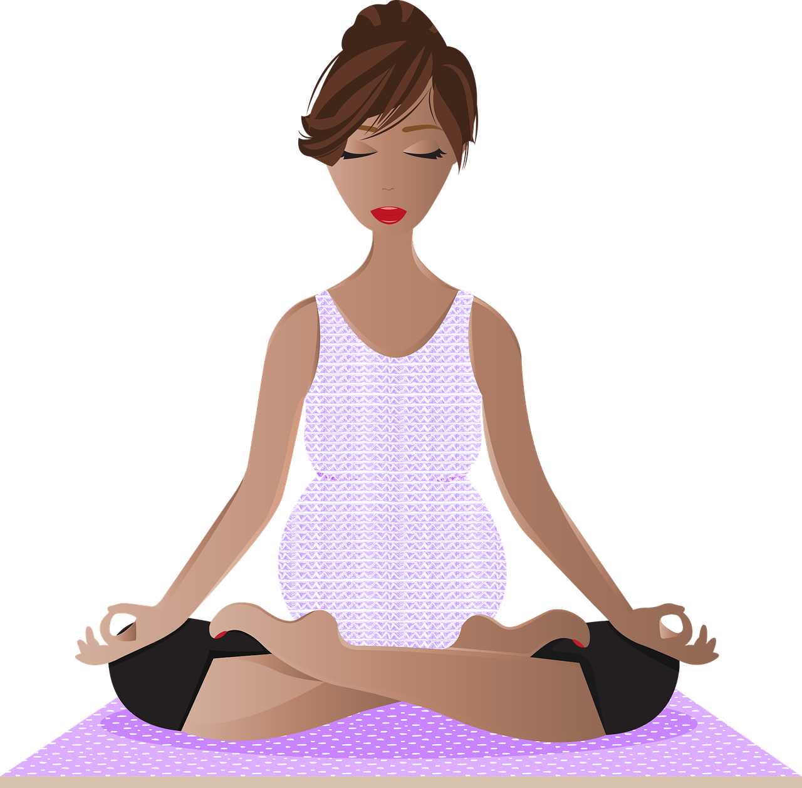

Yoga para embarazadas: beneficios, contraindicaciones y precauciones
Durante el embarazo, muchas mujeres se
preguntan si es seguro continuar ejercitándose o incluso algunas se cuestionan si quizás deberían de
intentar mantenerse activas o realizar ejercicios que les ayuden a llevarlo mejor, evitando así
ciertas
molestias y obteniendo beneficios para mamá y bebé.
El yoga es uno de los ejercicios más adecuados para realizar durante el embarazo. Por eso en esta ocasión te hablaremos de los beneficios, contraindicaciones y precauciones de practicar yoga cuando estés embarazada.
El yoga es uno de los ejercicios más adecuados para realizar durante el embarazo. Por eso en esta ocasión te hablaremos de los beneficios, contraindicaciones y precauciones de practicar yoga cuando estés embarazada.

Beneficios del yoga durante el
embarazo
Existen varios motivos por los que el yoga es
uno
de los ejercicios que más se recomienda para las embarazadas, y es que además de ser una
actividad física de bajo impacto, diversos estudios prueban que éste ofrece múltiples
beneficios
tanto para la madre como para el bebé.
Un estudio afirma que el yoga es el mejor ejercicio para el embarazo, ya que es más efectivo que caminar o realizar ejercicios de clases prenatales, y que puede ser realizado con seguridad en mujeres que padecen depresión.
De hecho, está comprobado que el yoga puede ayudar a reducir síntomas depresivos durante el embarazo, especialmente cuando se acompañan los ejercicios de posturas con meditación y relajación profunda, lo que lo hace ideal para quienes padezcan depresión o ansiedad.
Otro beneficio de practicar yoga durante el embarazo, es que ayuda a reducir el estrés y aumenta la función inmunológica, de acuerdo con un estudio en el que mujeres embarazadas lo practicaron de la semana 16 a la 36, asistiendo a clases de 70 minutos dos veces por semana.
Además, el yoga no sólo ayuda durante el embarazo, sino que además te prepara para el parto, ya que otro estudio comprobó que ayuda a reducir el dolor durante el parto e incluso podría ayudar a reducir la probabilidad de tener cesárea.
- Ayuda a dormir mejor, ya que es una actividad relajante que reduce la sensación de fatiga y el estrés.
- Disminuye el dolor de espalda al mejorar la postura corporal.
- Formas una conexión aún más fuerte con tu bebé, al hacer que te enfoques en tu respiración y de este modo te vuelves más consciente de tu cuerpo.
Un estudio afirma que el yoga es el mejor ejercicio para el embarazo, ya que es más efectivo que caminar o realizar ejercicios de clases prenatales, y que puede ser realizado con seguridad en mujeres que padecen depresión.
De hecho, está comprobado que el yoga puede ayudar a reducir síntomas depresivos durante el embarazo, especialmente cuando se acompañan los ejercicios de posturas con meditación y relajación profunda, lo que lo hace ideal para quienes padezcan depresión o ansiedad.
Otro beneficio de practicar yoga durante el embarazo, es que ayuda a reducir el estrés y aumenta la función inmunológica, de acuerdo con un estudio en el que mujeres embarazadas lo practicaron de la semana 16 a la 36, asistiendo a clases de 70 minutos dos veces por semana.
Además, el yoga no sólo ayuda durante el embarazo, sino que además te prepara para el parto, ya que otro estudio comprobó que ayuda a reducir el dolor durante el parto e incluso podría ayudar a reducir la probabilidad de tener cesárea.
Otros beneficios del yoga durante el embarazo son:
- Ayuda a dormir mejor, ya que es una actividad relajante que reduce la sensación de fatiga y el estrés.
- Disminuye el dolor de espalda al mejorar la postura corporal.
- Formas una conexión aún más fuerte con tu bebé, al hacer que te enfoques en tu respiración y de este modo te vuelves más consciente de tu cuerpo.
Contraindicaciones
Aunque el yoga sea uno de los mejores ejercicios para practicar durante el embarazo, como con
cualquier actividad física, hay ciertas cosas que debes evitar para practicarlo de manera
segura. Entre ellas se encuentran las siguientes:
- Evitar los tipos de yoga que requieran mucho esfuerzo como ashtanga, especialmente si nunca has practicado yoga. Lo mejor para el embarazo es el hatha yoga o el yoga prenatal, que ofrece posturas seguras, adaptadas para el embarazo.
- Evitar clases de yoga que se practiquen con altas temperaturas, como el Bikram yoga. En realidad, se debe evitar practicar cualquier tipo de actividad física si hace mucho calor o no se cuenta con ventilación adecuada.
- Al hacer yoga, se deben evitar hacer ciertas posturas que compriman el vientre o que requieran mucho estiramiento de la zona abdominal, así como posturas que requieran que estés acostada sobre tu espalda. Las posturas invertidas tampoco son recomendables durante el embarazo.
- Cada postura de yoga debe ser realizada con comodidad y sin forzar el cuerpo. Si no puedes hablar o te cuesta respirar bien mientras practicas una postura, te estás esforzando demasiado.
Hayas o no practicado yoga antes de tu embarazo, lo ideal es que acudas a una clase de yoga prenatal con un instructor certificado, ya que ellos están capacitados para saber cuáles posturas son seguras de practicar durante el embarazo. Además, durante la clase te enseñarán a respirar de manera correcta, lo que te ayudará a relajarte y enfocarte mejor, así como para mejorar tu respiración, que te será muy útil en el momento en que tengas las contracciones durante el parto.
- Evitar los tipos de yoga que requieran mucho esfuerzo como ashtanga, especialmente si nunca has practicado yoga. Lo mejor para el embarazo es el hatha yoga o el yoga prenatal, que ofrece posturas seguras, adaptadas para el embarazo.
- Evitar clases de yoga que se practiquen con altas temperaturas, como el Bikram yoga. En realidad, se debe evitar practicar cualquier tipo de actividad física si hace mucho calor o no se cuenta con ventilación adecuada.
- Al hacer yoga, se deben evitar hacer ciertas posturas que compriman el vientre o que requieran mucho estiramiento de la zona abdominal, así como posturas que requieran que estés acostada sobre tu espalda. Las posturas invertidas tampoco son recomendables durante el embarazo.
- Cada postura de yoga debe ser realizada con comodidad y sin forzar el cuerpo. Si no puedes hablar o te cuesta respirar bien mientras practicas una postura, te estás esforzando demasiado.
Hayas o no practicado yoga antes de tu embarazo, lo ideal es que acudas a una clase de yoga prenatal con un instructor certificado, ya que ellos están capacitados para saber cuáles posturas son seguras de practicar durante el embarazo. Además, durante la clase te enseñarán a respirar de manera correcta, lo que te ayudará a relajarte y enfocarte mejor, así como para mejorar tu respiración, que te será muy útil en el momento en que tengas las contracciones durante el parto.
Precauciones
Es importante mencionar que antes de iniciar cualquier rutina de ejercicios o actividad física
durante el embarazo, debes tomar ciertas precauciones, y siempre consultarlo y hablarlo con tu
médico, para que te asegure que no existe ningún riesgo para ti o para tu bebé.
